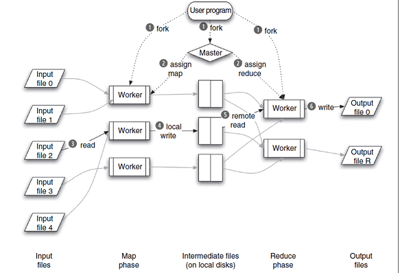

Introduction¶
Five main principles of cloud computing:
Pooled resources: Available to any subscribing users
Virtualization: High utilization of hardware assets
Elasticity: Dynamic scale without CAPEX
Automation: Build, deploy, configure, provision, and move, all without manual intervention
Metered billing: Per-usage business model; pay only for what you use
The cloud offers the illusion of infinite resources, available on demand. You no longer need to play the guessing game of how many users need to be supported and how scalable the application is. The cloud takes care of the peaks and troughs of utilization times. In the world of the cloud, you pay for only the resources you use, when you use them. This is the revolutionary change: the ability to handle scale without paying a premium. In this realm of true utility computing, resource utilization mirrors the way we consume electricity or water.
Deployment models¶
Application deployment models: CAPEX (up-front capital expenditure) vs OPEX (ongoing operational costs)
Cloud ready¶
If you can answer “yes” to some or all of the following questions, you may be cloud-ready:
Do you have automated scripts for setting up the operating system and installing all necessary software?
Do you package your software in such a way that all the configuration files are bundled with the binary artifacts, ready for one-click deployment?
Do you run your software stack inside of virtual machines that can be cloned?
Are common maintenance tasks (such as vacuuming the database, announcing maintenance windows, and backing up data) happening automatically or easily automated with a single click?
Is your software designed to scale horizontally by adding new web servers or other machines?
Cloud evolution¶
On the software side of the cloud evolution are three important threads of development:
virtualization
SOA
SaaS
Two of these are technological, and the third relates to the business model.
SOA¶
We see SOA as the logical extension of browser-based standardization applied to machine-to-machine communication.
Things that humans did through browsers that interacted with a web server are now done machine-to-machine using the same web-based standard protocols and are called SOA. SOA makes practical the componentization and composition of services into applications, and hence it can serve as the architectural model for building composite applications running on multiple virtualized instances.
SOA is a precursor to the cloud. Distributed loosely coupled systems, which formed the basis for SOA, are by now widely used by virtually every organization with an active web presence.
A remote service publishes its interface (via a WSDL), and a consuming service has to abide by that interface to consume the service. Each SOA building block can play one or both of two roles: service provider or service consumer. The Universal Description Discovery and Integration (UDDI) specification defines a way to publish and discover information about web services. Other service broker technologies include (for example) Electronic Business using eXtensible Markup Language (ebXML).
Whichever service the service consumers need, they have to take it into the brokers, bind it with respective service, and then use it. Putting this more simplistically, SOA is all about the process of defining an IT solution or architecture, whereas cloud computing is an architectural alternative.
We can say that SOA can’t be replaced by cloud computing. Most cloud computing solutions are defined through SOA. They don’t compete—they’re complementary notions.
SaaS¶
The final software evolution we consider most pertinent to the cloud is SaaS.
Historically, enterprise software was sold predominantly in a perpetual license model. In this model, a customer purchased the right to use a certain software application in perpetuity for a fixed, and in many cases high, price. In subsequent years, they paid for support and maintenance at typically around 18 percent of the original price. This entitled the customer to upgrades of the software and help when they ran into difficulty.
In the SaaS model, you don’t purchase the software—you rent it. Typically, the fee scales with the amount of use, so the value derived from the software is proportional to the amount spent on it. The customer buys access to the software for a specified term, which may be days, weeks, months, or years, and can elect to stop paying when they no longer need the SaaS offering. Cloud computing service providers have adopted this pay-as-you-go or on-demand model.
XaaS¶
You may hear a lot of XaaS like IaaS, PaaS, SaaS, FaaS. One metaphors to explain the idea is Pizza service.
On the left side (On Premises), you have full control on every step but you have to care all of them. On the right side (SaaS), you do not need to care about all the details but you also have no control of them. Mainly you just as it is.
The same rule applies to real cloud services.
Infrastructure as a Service (IaaS)¶
The lowest level of XaaS is known as IaaS, or sometimes as Hardware as a Service (HaaS).
A good example of IaaS is the Amazon Elastic Compute Cloud (EC2).
A user of IaaS is operating at the lowest level of granularity available and with the least amount of prepackaged functionality. An IaaS provider supplies virtual machine images of different operating system flavors. These images can be tailored by the developer to run any custom or packaged application. These applications can run natively on the chosen OS and can be saved for a particular purpose. The user can bring online and use instances of these virtual machine images when needed. Use of these images is typically metered and charged in hour-long increments. Storage and bandwidth are also consumable commodities in an IaaS environment, with storage typically charged per gigabyte per month and bandwidth charged for transit into and out of the system.
IaaS provides great flexibility and control over the cloud resources being consumed, but typically more work is required of the developer to operate effectively in the environment.
Platform as a Service (PaaS)¶
PaaS’s fundamental billing quantities are somewhat similar to those of IaaS: consumption of CPU, bandwidth, and storage operates under similar models.
Examples of PaaS include Google AppEngine and Microsoft Azure.
The main difference is that PaaS requires less interaction with the bare metal of the system. You don’t need to directly interact with or administer the virtual OSs. Instead, you can let the platform abstract away that interaction and concentrate specifically on writing the application. This simplification generally comes at the cost of less flexibility and the requirement to code in the specific languages supported by the particular PaaS provider.
Software as a Service (SaaS) and Framework as a Service (FaaS)¶
SaaS, as described earlier in the chapter, refers to services and applications that are available on an on-demand basis. Salesforce.com is an example.
FaaS is an environment adjunct to a SaaS offering and allows developers to extend the prebuilt functionality of the SaaS applications. Force.com is an example of a FaaS that extends the Salesforce.com SaaS offering. FaaS offerings are useful specifically for augmenting and enhancing the capabilities of the base SaaS system. You can use FaaS for creating either custom, specialized applications for a specific organization, or general-purpose applications that can be made available to any customer of the SaaS offering. Like a PaaS environment, a developer in a FaaS environment can only use the specific languages and APIs provided by the FaaS.
Benefits and Risks of SaaS¶
Benefits:
Faster deployment: because no local installation is required
Usage-based pricing: letting you pay only for what you use
Less financial risk: with lower up-front cost and try-before-you-buy options
Reduced need for on-premises resources: such as servers and IT staff
Easier upgrades: with no on-premises software to update
Risks:
Requires trusting a SaaS provider: for availability and data security
Can raise legal/regulatory concerns: with storing data outside customer premises
Can limit customization: if customers share a multi-tenant application
Can be harder to integrate with on-premises applications
Can have lower performance than on-premises applications
Benefits and Risks of SaaS Software Vendors¶
Benefits:
Offers potential to reach new customers in broader markets
Can sell directly to business decision maker without going through IT
Can provide more predictable revenue than traditional licensing
Can lower support costs due to shared multi-tenant applications
Provides more knowledge about how customers use the application
Risks:
Must demonstrate real value up front, due to try-before-you-buy option
Revenue builds up more slowly because of typical SaaS pricing models
May lessen ability to sell customization services due to multi-tenant applications
Can bring new sales challenges, e.g. customer resistance to the cloud
Requires significant business changes, e.g. pricing and sales
Private and Hybrid clouds¶
For some users, they may resistant to go public cloud for some reasons. Then private or Hybrid clouds are relevant to them.
Private clouds¶
Private clouds are a variant of generic cloud computing where internal data-center resources of an enterprise or organization aren’t made available to the general public
Benefits:
Faster deployment of VMs and applications, because the process is automated
Reduced administrative costs, because more of the process is automated
Fewer deployment errors, due to automated deployment of standard services
Easier cost management, with per-VM chargeback or showback
Risks:
VM administrators find it hard to trust users to deploy their own VMs and applications
VM administrators might resist having part of their job automated
Defining standard services can be challenging, since users want different things
Changing operational process is hard for risk-averse IT departments
Hybrid clouds¶
Hybrid clouds combine private and public clouds.
VMWare, Microsoft, HP, OpenStack, Abiquo have support for private/hybrid cloud solution.
MapReduce¶
History: Google publish the document of ‘Google File System’ and MapReduce in 2014. Then Apache project is to make an open source implementation about it.
The name MapReduce has its roots in functional programming, inspired by the map and reduce functions first called out in the programming language Lisp. In Lisp, a map takes as input a function and a sequence of values. It then applies the function to each value in the sequence. A reduce combines all the elements of a sequence using a binary operation. For example, it may use + to add all the elements in a sequence.
MapReduce implementations are sophisticated frameworks for reliable parallel processing in a highly distributed fashion. They specifically allow distributed processing of the map and reduce functions. Provided all map functions are independent of each other, all maps can be done in parallel. The key is any dependencies in the data set. There may in practice be limitations caused by the data source and/or number of CPUs near that data.
The set of reducers operating on the same key produced by the map operations can perform the reduction phase in parallel as well.
One of the copies of the program is special: the master. The rest are workers assigned work by the master. The master picks idle workers and assigns each one a map task or a reduce task.
Other important concepts¶
Power usage effectiveness (PUE)¶
Power usage effectiveness (PUE) is a metric used to determine the energy efficiency of a data center.
Representational State Transfer (REST)¶
REST-style architectures consist of clients and servers.
Clients initiate requests to servers; server s process requests and return appropriate responses.
Requests and responses are built around the transfer of representations of resources. A resource can be any coherent and meaningful concept that may be addressed. A representation of a resource is typically a document that captures the current or intended state of a resource. Conforming to the REST constraints is referred to as being RESTful.
RESTful means conforming to the REST model of an architecture consisting of clients and servers, where clients initiate requests to servers and servers process requests and return appropriate responses.
Scalability¶
Scalability is about the cloud platform being able to handle an increased load of users working on a cloud application. Elasticity is the ability of the cloud platform to scale up or down based on need without disrupting the business. Without this, the economies of moving a business/application to the cloud don’t make sense.
Database sharding¶
Basic database sharding partitions the database based on who will access that part of the services.
Attributes between different architectures¶
Critical application attributes in tightly vs loosely coupled architectures:
Tightly coupled |
Loosely coupled |
|
Technology mix |
Homogeneous |
Heterogeneous |
Data typing |
Dependent |
Independent |
Interface model |
API |
Service |
Interaction style |
PRC |
Document |
Synchronization |
Synchronous |
Asynchronous |
Granularity |
Object |
Message |
Syntactic definition |
By convention |
Self-describing |
Semantic adaptation |
By recoding |
Via transformation |
Bindings |
Fixed and early |
Delayed |
Software objective |
Reusability |
Broad applicability |
Consequences |
Anticipated |
Unintended |
Written by Binwei@Oslo